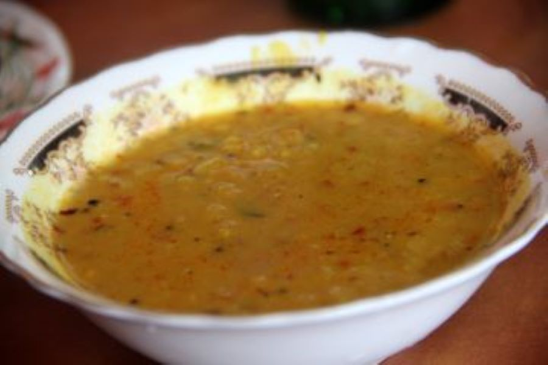
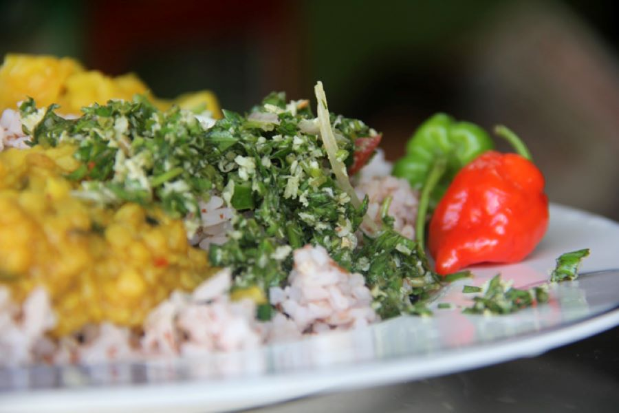
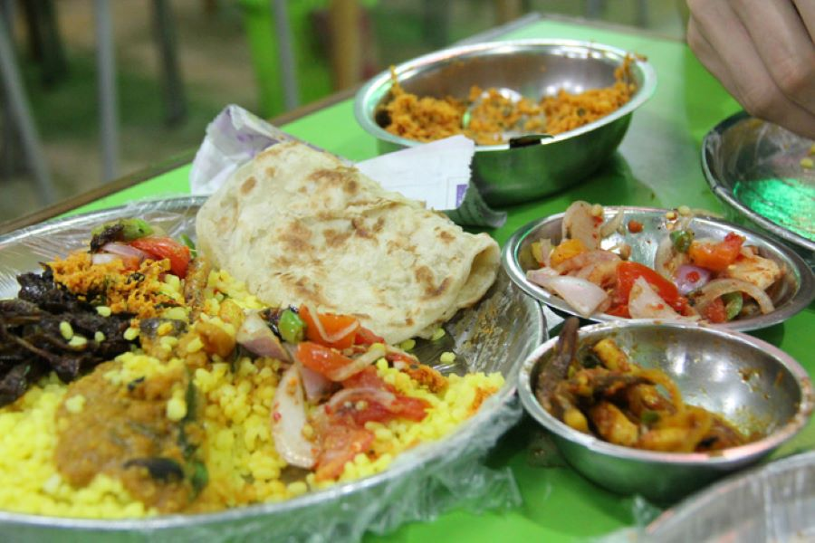
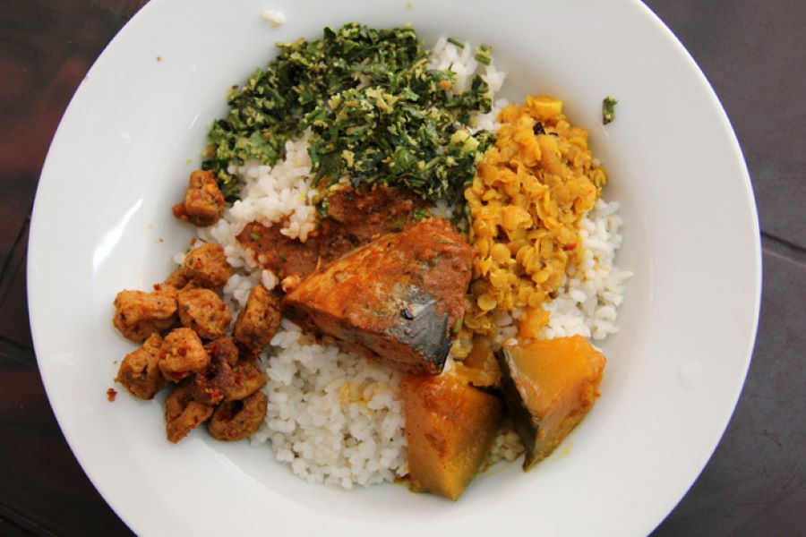
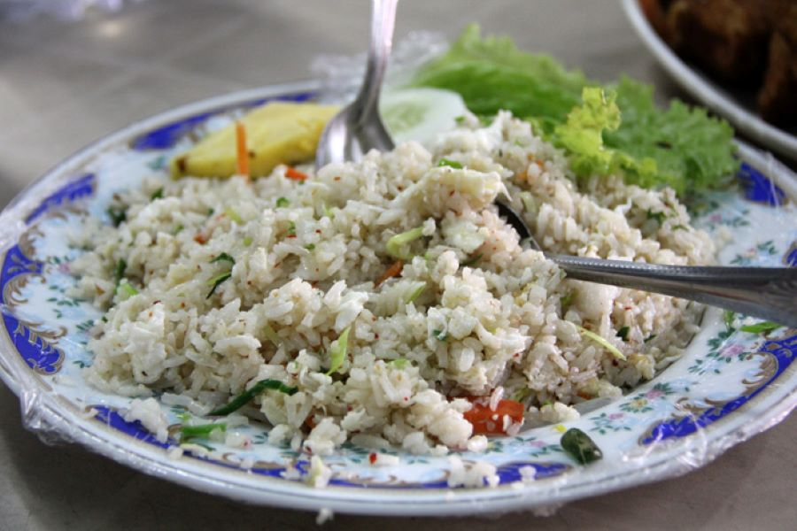
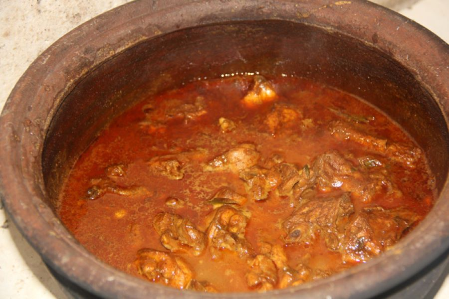

Sri Lankan Foods

Sri Lankan Dhal Curry (Parippu)
Dhal curry is one of the most commonly consumed staple dishes in Sri Lankan cuisine. The dhal, usually masoor dhal which are red lentils, are often cooked in a beautiful blend of spices, and then a few spoons of coconut milk are added to create a rich stew curry is omnipresent in Sri Lanka, and it’s consumed with all forms of rice and bread.
1portion
LKR 500

Deep Fried Chicken Fried Rice
If only more countries in the world knew about fried chicken fried rice, it would be integrated into cuisines around the world…guaranteed. I don’t think there’s much need for explanation; Take fried chicken and make fried rice with it.
1portion
LKR 600

Cobra Chilies
It’s not exactly a Sri Lankan food, but those innocent looking chili peppers on the plate above are far from kind. Known as the “Cobra Chili,” these little guys were so delicious, but they nearly burnt a hole in my tongue.
1portion
LKR 560

Sri Lankan Tamil Food (Jaffna)
Some of my favorite Sri Lankan meals were from the northern Tamil tip of Jaffna. This outrageously tasty meal included yellow rice, an assortment of vegetable and seafood curries, a few parathas, and a number of heaping spoons full of tomato onion garnish. If you’re ever in Jaffna, you should have a meal at Hotel Rolex – they serve some pretty tasty dishes, and the staff when I ate there were all friendly and helpful.
1portion
LKR 800

Fish Curry and Mixed Rice
There’s nothing more common to eat as Sri Lankan food than a nutritious plate of rice and curry. You normally get a plate of rice piled with a few of the daily vegetable curries and a choice of fish curry as well. A plate like the one above cost me 120 LKR ($1.09), but without fish it would have even been less.
1portion
LKR 960

Egg Fried Rice
Though it’s made in a wok and looks like an item off a Chinese or Thai street food menu, Sri Lankan fried rice still tastes like Sri Lankan food. It could be the assortment of ingredients or the hint of cumin that accompanies the rice. Nevertheless, a number of Chinese influenced dishes remain popular as Sri Lakan food staples.
1portion
LKR 560

Sri Lankan Chicken Curry (kukul mas curry)
I have read that Sri Lankan food is difficult to master, simply because everyone has their own variation of each dish, and previously no recipes were written; Basically no chicken curry will taste exactly the same throughout the country, everyone has their own recipe and ratio of spices and ingredients. When I was in Pusselawa, I had the privilege to stay at a grandmother’s home in the rolling tea fields. Everyday I’d go to the market and buy some meat and she’d cook it up, tempering the spices, squeezing fresh coconut milk, and creating some of the best curries I’ve ever had in my life. This clay pot of Grandmother’s home-made chicken curry goes down as one of the top 10 flavors that has ever entered my mouth .
1portion
LKR 700
ABOUT SL TRAVELERS
Information on listed products and services are provided by the operator and were correct at the time of publishing. Please visit the operator’s website for further information. Sri Lanka Tourism makes no representations whatsoever about any other websites which you may access through this website. Some websites are linked to the Sri Lanka Tourism website but are independent from Sri Lanka Tourism and therefore, are not under the control of Sri Lanka Tourism. Sri Lanka Tourism, therefore, does not endorse or accept any responsibility for the use of websites which are owned or operated by third parties and makes no representation or warranty in relation to the standard, class or fitness for purpose of any services, nor does it endorse or in any respect warrant any products or services by virtue of any information, material or content linked from or to this site.
@SriLankanBestTravels | developed by Suhas | 2022